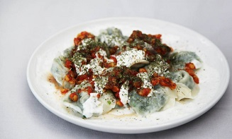

Afghan Ashak

This Ashak is a very famous Afghan Dish which is made of dough and green chives inside with some Tomato sauce and a special type of beans. It's been boiled in water for about 20 to 30 minutes.
This Ashak is a very famous Afghan Dish which is made of dough and green chives inside with some Tomato sauce and a special type of beans. It's been boiled in water for about 20 to 30 minutes.